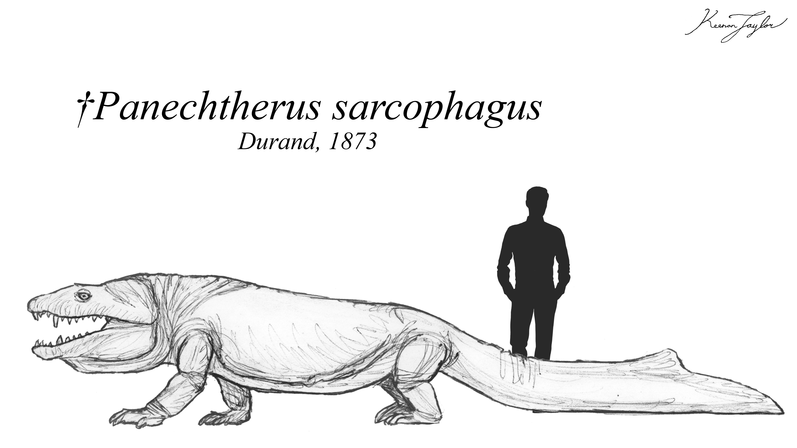
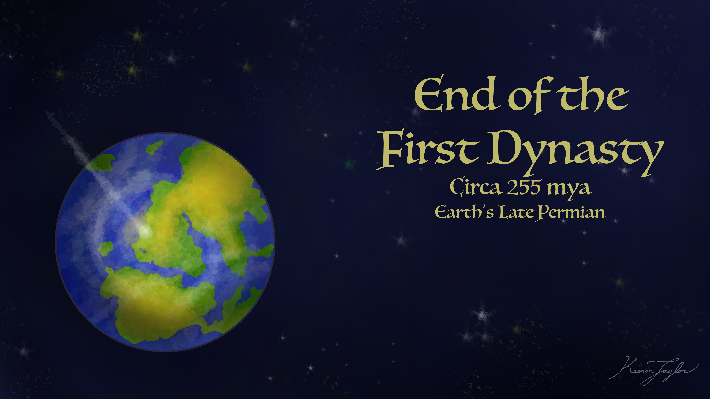
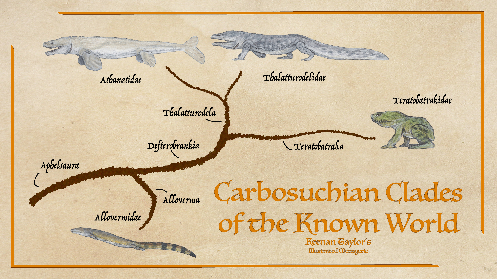
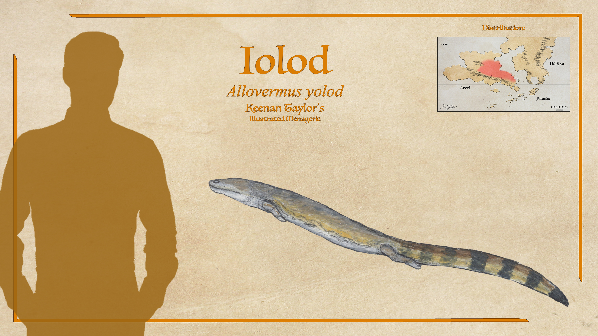
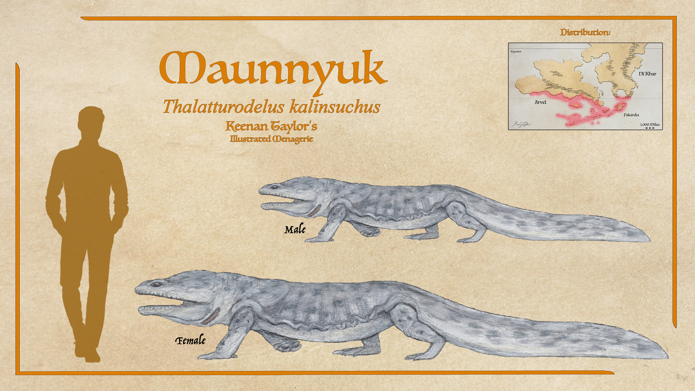
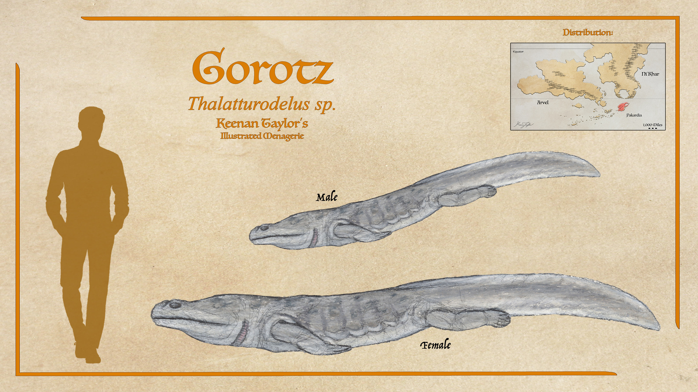
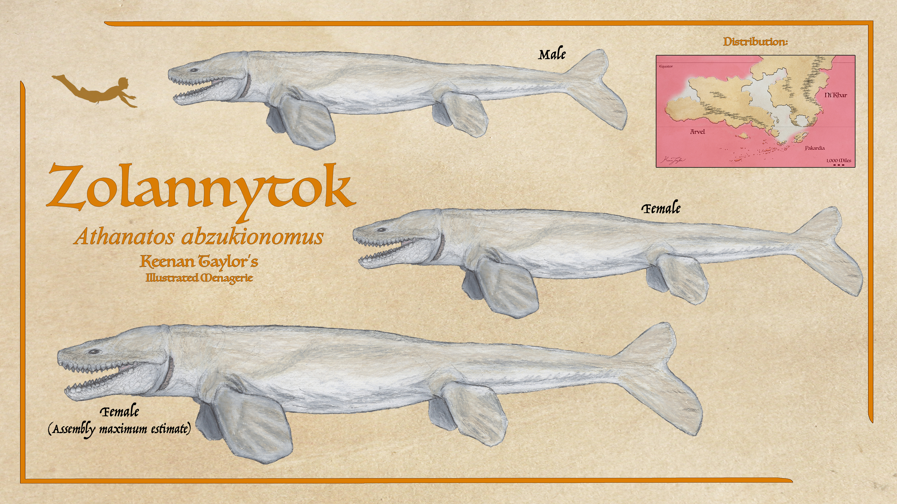
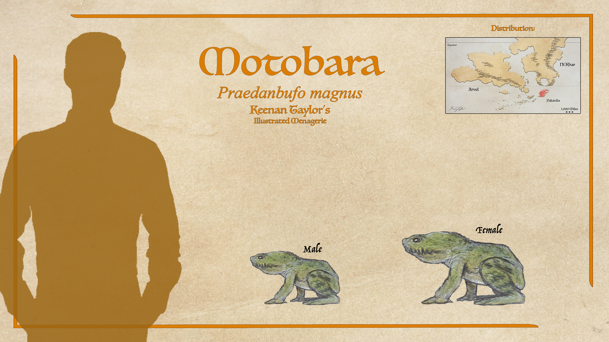
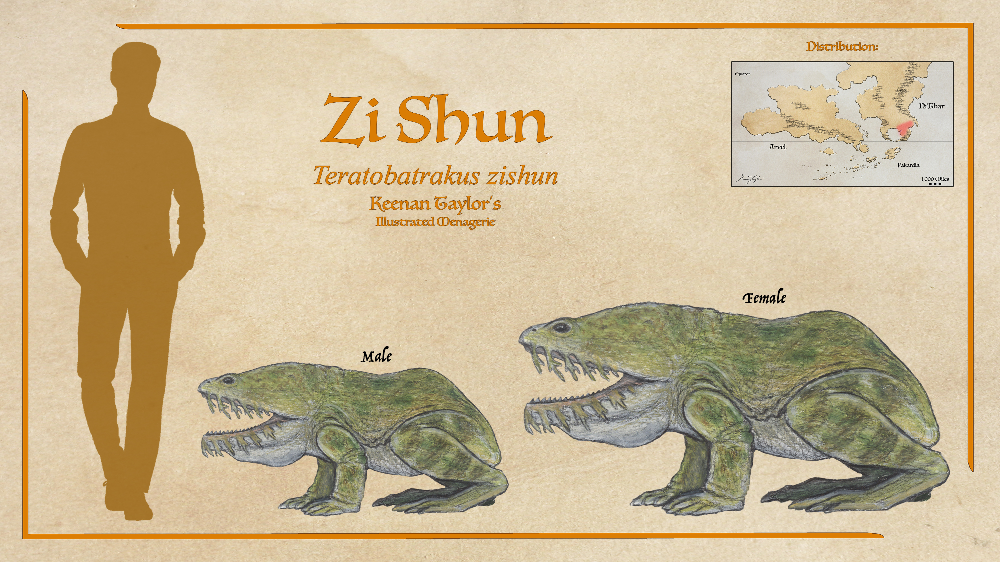

Scientific Classification
| Kingdom | Animalia | Animal | Animals |
|---|---|---|---|
| Phylum | Chordata | Chorda | Corded |
| Superclass | Tetrapoda | τέσσᾰρες + πούς | Four-Footed |
| Clade | Batrachomorpha | βᾰ́τρᾰχος + μορφή | Frog-Shaped |
| Class | Carbosuchia | Carbō + ςοῦχος | Coal Crocodiles |
Taxonomic note: The taxonomic position of the carbosuchians has historically been one of the more difficult problems in Kaimeran paleontology. They were intially considered to be a basal group of temnospondyls, but their relationships remain debated. Some analyses recover them as the sister lineage to the earliest temnospondyls, while others place them within the stem leading toward temnospondyl-like animals. Alternative analyses have instead recovered them close to colosteids and baphetids, considerably more basal stem-tetrapod groups.
01 · INTRODUCTION
Overview
The carbosuchians are an ancient endemic radiation of tetrapodamorphs that first appeared during Kaimere's First Dynasty, approximately 360 — 255 million years ago. They were among the principal predatory lineages to evolve independently on Kaimere following the earliest harvesting of terrestrial life from Earth. Although superficially resembling crocodilians, salamanders, or large lizards, their similarities to these groups are the result of convergent evolution rather than close relationship. Carbosuchians developed a characteristic semiaquatic body plan consisting of elongated bodies, powerful tails, broad skulls, and limbs adapted to movement through shallow water and swamp environments.
The group arose within the exceptionally warm and humid ecosystems of the First Dynasty. During this period, much of Kaimere was covered by swamps and rainforests, while abundant endemic herbivorous tetrapodamorphs provided an extensive prey base. Carbosuchians became particularly successful in these environments because their low-energy ambush strategy allowed them to exploit prey without the energetic demands associated with prolonged pursuit. They consequently became some of the most important predators of Kaimere's early wetlands.
Early carbosuchians generally possessed broad heads and paddle-like limbs reminiscent of salamanders, while more derived forms evolved elongated jaws containing numerous gripping teeth. Their tails were often laterally compressed or fluked, providing propulsion through water. Although most were associated with wetlands, the radiation was not restricted to a single ecological role. Some smaller forms became increasingly terrestrial and even arboreal, allowing carbosuchians to occupy tropical habitats beyond the swamps that had originally supported their diversification.
Carbosuchians also differ from many modern amphibians in their reproductive biology. They apparently lacked a conventional free-living tadpole or larval stage. Instead, they were ovoviviparous, producing relatively well-developed and precocial young. This reproductive strategy was likely important to their success in the unstable aquatic environments of prehistoric Kaimere, allowing developing young to remain protected until they were sufficiently developed to survive independently.
The modern diversity of carbosuchians therefore represents only the latest phase of a lineage whose history stretches back to the earliest complex ecosystems of Kaimere. Their evolutionary history was repeatedly interrupted by climatic changes, continental rearrangements, extinction events, and competition from successive waves of harvested organisms. Despite these pressures, carbosuchians repeatedly survived in ecological refugia and ultimately produced a second radiation in the modern Known World and beyond.
02 · DEEP TIME
Evolutionary History
Origins in the First Dynasty

Carbosuchians originated during the First Dynasty, when Kaimere was undergoing an enormous ecological expansion following the establishment of terrestrial ecosystems. The earliest stages of this dynasty were characterized by warm temperatures, high sea levels, extensive wetlands, and rainforest environments covering much of the planet. The rapid establishment of soils and vegetation created highly productive ecosystems, while the abundance of endemic tetrapodamorph herbivores provided the foundation for increasingly complex terrestrial food webs.
Within these wetlands, carbosuchians became major predators. Their semiaquatic morphology allowed them to exploit the boundary between terrestrial and aquatic ecosystems, while their relatively undemanding ambush strategy was well suited to a world dominated by swamps. Rather than pursuing prey over long distances, they could remain concealed in water and strike when suitable animals approached. This ecological strategy was particularly effective against the abundant herbivorous tetrapodamorphs of the period.
The early radiation was probably considerably more diverse than its surviving descendants suggest. Basal members retained broad skulls and paddle-like limbs, while later forms developed increasingly specialized jaws and bodies. Some small species abandoned the strictly aquatic lifestyle and became more active terrestrial or arboreal predators. This diversification allowed carbosuchians to persist even as competition increased between the major endemic tetrapod clades of the First Dynasty.
The First Dynasty Arms Race

By approximately 295 million years ago, continental movement brought previously separated ecosystems into greater contact. The resulting interchange intensified competition among Kaimere's endemic tetrapod groups. The six principal endemic classes of the First Dynasty were increasingly forced into direct ecological competition, producing a degree of niche specialization greater than that seen in Earth's Carboniferous ecosystems.
Carbosuchians remained particularly successful in the wetlands. Their position was partly dependent on the abundance of large prey, including members of other endemic tetrapod clades. As these ecosystems became increasingly competitive, some carbosuchians became specialized predators while others retained the generalized ambush strategy that had characterized the ancestral radiation.
This success was nevertheless tied closely to Kaimere's climate. Around 265 million years ago, continental rearrangement disrupted major wind and water systems, weakening the global hothouse climate. Kaimere began to become increasingly arid, causing the wetlands upon which many large endemic animals depended to contract. Large carbosuchians were especially vulnerable because their ecological success depended upon both extensive wetland habitat and abundant large prey.
The resulting environmental changes marked the beginning of a prolonged decline for many of the largest First Dynasty carbosuchians. Although some populations survived, the extensive wetland ecosystems that had allowed the group to become major predators were increasingly fragmented.
The End of the First Dynasty

The final collapse of the First Dynasty was associated with an extraterrestrial impact that struck the tropical western coast of the Ni'Khari — Kairulan supercontinent. The event occurred while many native ecosystems were already under environmental stress. Although Kaimere's greater size reduced the global severity of the impact relative to Earth's major mass extinctions, the consequences for the native fauna were severe.
The subsequent recovery brought repeated harvests of Late Permian organisms from Earth. These newly introduced animals rapidly occupied many of the ecological opportunities left vacant by the extinction. First Dynasty lineages that had survived were frequently outcompeted or pushed toward ecological margins. Carbosuchians were among the survivors, but their former dominance was greatly reduced as the new Permian fauna transformed Kaimere's ecosystems.
For much of the following Permian Dynasty, the tropical continents were dominated by harvested Permian fauna. Carbosuchians persisted primarily as relict populations in isolated wetland environments rather than as dominant components of the megafaunal community.
Survival Through the Mesozoic
The source material indicates that descendants of the First Dynasty endemic tetrapods survived through subsequent dynasties, although they generally did not regain the ecological dominance they had possessed during their original radiation. During the Mesozoic, the rise of pseudosuchians and later dinosaurs transformed the predator communities of Kaimere. The tropical wetlands became particularly important refugia for surviving native lineages.
The rise and eventual replacement of the early Mesozoic pseudosuchians further altered the ecological landscape. As climates shifted and later dinosaurian dynasties became established, many First Dynasty relics became increasingly restricted. By the later Mesozoic, the major endemic classes were represented primarily by small or geographically isolated populations within the Known World and southern continents.
Carbosuchians therefore survived not because they remained dominant, but because their basic ecological strategy proved resilient. Wetlands repeatedly appeared throughout Kaimere's geological history, providing environments in which descendants of the ancient radiation could persist while larger and more specialized lineages disappeared.
The Dynastic Extinction and Modern Radiation
A major turning point came approximately 15 million years ago, during the Dynastic Extinction. Massive geological disruption, volcanism, climatic change, and associated ecological collapse devastated much of the Known World. Many of the large endemic families that had dominated the preceding Tyrant Dynasty disappeared, while smaller and more generalized organisms survived. Carbosuchians were among these survivors.
The extinction effectively reopened ecological space across the Known World. As the ecosystems recovered, surviving carbosuchians were able to diversify alongside mammals, dinosaurs, and other surviving lineages. Their modern radiation appears to have developed from these post-extinction populations rather than representing a direct continuation of the enormous predatory forms of the First Dynasty.
The modern carbosuchian lineage is in the Known World is classified within Apheliosauria, which consists of two major branches: Alloverma and Deuterobranchia.
Known World Clades

Alloverma represents the smaller and primarily freshwater branch. Approximately a dozen species are known from Arvel and Ni'Khar, with the greatest diversity occurring in Arvel, where the lineage is believed to have originated. Most are approximately half a meter long, although the iolod of the Arvelith Basin lakes can exceed one meter. Allovermans inhabit slow-moving freshwater environments, where they ambush and scavenge a broad variety of prey. Unlike the aquatic deuterobranchs, they have lost their gills and rely primarily on aerial respiration, although oxygen can still be absorbed through the skin. Their low respiratory demands allow them to breathe only a few times per day under normal circumstances. This branch represents one of the clearest examples of the carbosuchian lineage returning toward a more terrestrial mode of respiration after its ancestors had become increasingly aquatic.
The Deuterobranchia developed a much broader range of body plans. It contains two major branches, the Teratobatrachia and Thalatturodela, both of which retain the ability to obtain oxygen from both water and air. The Teratobatrachia, or "monstrous frogs," appear to have originated in Pakardia. Their frog-like appearance is convergent rather than evidence of close relationship with true frogs. Their limbs and bodies are adapted for a distinctive jumping motion used primarily for sudden attacks and escape rather than sustained terrestrial locomotion. They are principally aquatic and crawl when moving normally on land. Some species can launch themselves at approximately eight miles per hour over short distances. The largest known Pakardiant teratobatrakids include the motobara, which can reach approximately three kilograms. In the Seridic wetlands, related forms became even more specialized for productive lowland swamps. The second deuterobranch lineage, Thalatturodela, represents the most aquatic branch of the modern radiation. The lineage is thought to have evolved in Kaishel and subsequently spread northward with the movement of the Pakardiokhalin plate, although a later dispersal by swimming remains a possibility. Thalatturodela contains the families Thalatturodelidae and Athanatidae. Their members include freshwater, brackish, coastal, and fully marine forms. Unlike Alloverma, they retain functional gills into adulthood and are capable of efficient aquatic respiration while also breathing air. The thalatturodelids retain a relatively salamander-like body plan, whereas the more derived athanatids possess limbs modified into fins and tails specialized for propulsion through the water column.
The greatest ecological expansion of carbosuchians occurred within the marine Thalatturodela. Some members became increasingly specialized for coastal and oceanic environments, eventually producing the giant athanatids. The most extreme example is zolannytok, the so-called Steward of the Abyss. It is a highly specialized marine carbosuchian belonging to Athanatidae. Documented specimens approach 15 meters in length, while much larger sizes are reported by Akanuk whalers but remain unconfirmed by the Assembly. Zolannytok demonstrates how radically the ancient carbosuchian body plan could be transformed. Juveniles inhabit relatively shallow coastal environments and possess large gills, while adults increasingly inhabit deep offshore waters. Mature individuals can become enormous, pale-colored animals capable of both scavenging and actively hunting marine prey. The lineage retains the ancestral carbosuchian capacity for live birth, with females returning to coastal kelp forests to produce large litters of developed young. This reproductive strategy allows the young to begin life in comparatively protected shallow-water environments before gradually moving into deeper habitats as they mature. The modern maunnyuk demonstrates a less extreme version of this aquatic specialization. Reaching approximately four meters, it inhabits rivers and coastal environments around the Khalin Sea and Pakardia. Adults can tolerate both freshwater and seawater, while young spend their first years in freshwater and possess partially external gills.
03 · SPECIES ACCOUNTS
Known Diversity
The following accounts document representative felids recorded in the encyclopedia. Select a species to consult its individual natural history and descriptive account.
Iolod

Allovermus yolod
Alloverma is a carbosuchian clade with a dozen or so species found throughout Arvel and Ni'Khar. It is believed they originated in Arvel, where they are most abundant and speciose. These are generally around half a meter long, though the iolod of the Arvelith basin lakes can sometimes exceed a meter in length. They tend to favor slow-moving freshwater environments like the central basins, where they ambush and scavenge a wide range of prey. Unlike the zolannytok, they have lost their gills presumably because of terrestrial ancestors and must primarily breathe air, though they can intake oxygen through their skin and often only need to breathe a few times a day. Unlike the zolannytok, which is attested to having surprising intelligence, study of the few known allovermans indicate far less developed cognitive function.
Read species article →Maunnyuk

Thalatturodelus kalinsuchus
There are also relatives of the zolannytok in the order Thalatturodela. This family, the nominative Thalatturodelidae, include freshwater, brackish, and marine species. It is believed these generally cold-adapted animals evolved in Kaishel, and when the Pakardiokhalin plate broke off, this clade was carried north along with it. However, it's also possible that they simply swam north and populated more recently. The maunnyuk, meaning 'corpse salamander' in the language of the Akanuk whalers, is the largest species found in the rivers and coastal habitats of the Khalin Sea and Pakardia, and even expand their range as far north as the southern coasts of the Crescent peninsula in Ni'Khar. They are especially common in the Gulf of Iratame in eastern Pakardia, and kelp forests throughout the Khalin Sea. Though the alligator is found in some of their range, and certainly offers competition, the maunnyuk has even greater cold tolerance and as they can much better tolerate saltwater, they are much more common in the Khalin Islands.
Read species article →Gorotz

Thalatturodelus sp.
There is another species of maunnyuk in the highlands of Pakardia. Called the gorotz, same as the maunnyuk in Pakardiant, this is a freshwater exclusive member of the clade endemic to the freshwater lakes of Pakardia's highlands. Very little is known of this animal other than it appears to be endemic to the Great Lakes. It has been suggested that this may be the same species, just a freshwater morph as is seen in some fish in the Great Lakes, but as the Assembly has no specimens and likely never will, this is one of many questions regarding Pakardiant faunal cladistics that will remain a mystery.
Read species article →Zolannytok

Athanatos abzukionomus
The abyss of Kaimere is a very unfamiliar place. As it is beyond the territory of the portal, its challenges and extinctions are not supplemented by harvest and very few deep sea fauna of Earth are sent to this habitat, so its cast is quite distinct from ours. Perhaps the most famous is called the Steward of the Abyss by the Khalin. Zolannytok in the language of the Akanuk, the whalers who most frequently encounter this sea monster. According to the Akanuk, these monsters can reach lengths of just over 16 span, so 27 meters or nearly 90 feet. This would make them among the largest animals in Kaimere.
Read species article →Motobara

Praedanbufo magnus
In Pakardia, the largest species of these monstrous frogs is the motobara. They can rival the largest of Earth frogs, weighing up to three kilograms. However, this is nothing compared to the size this clade achieved once they got to the Seridic wetlands. Despite a superficial resemblance to frogs, they have enough differences in gait and appearance that it is often quickly evident that their bodyplan is merely convergent. These are primarily aquatic and, like their sister clade thalatturodela, can breathe both water and air with equal measure. When walking on land, they crawl. The hop that much of their anatomy is adapted for is employed for rapid ambush or escape from predators. After waiting in ambush, this launch can see them accelerate up to eight miles per hour.
Read species article →Zi Shun

Teratobatrachus zishun
The zi shun is the largest of the teratobatrachids. Males can sometimes reach ninety kilos. Females, though less active, can attain an estimated two hundred kilos based on the largest skeleton in the archives of the Great Library of Bolondakoi. The Serid speak of even larger individuals deeper in the swamp, though as Assembly studies in this region are fairly limited and at the behest of guides from the Great Library, these rumors are difficult to substantiate. They are said to be occasional man-eaters. These are active predators, though it is likely given their size that they generally target children. They're not nearly as able to process a kill as their longer cousins, which can break prey apart with strong lateral shakes, so often bury corpses they can't swallow for a few weeks then return to eat parts once they are more easily broken apart.
Read species article →04 · CLASSIFICATION
Taxonomic Notes
The taxonomic position of the carbosuchians has historically been one of the more difficult problems in Kaimeran paleontology. Unlike most major vertebrate groups on modern Kaimere, they do not have a direct Earth analogue with which their relationships can easily be compared. They are instead members of the endemic Kaimeran tetrapodamorphs, a collection of lineages that originated independently during the First Dynasty.
Their position within the broader tetrapod family tree remains debated. Cranial and palatal characteristics have traditionally placed them close to the base of the tetrapod radiation. Some analyses recover them as the sister lineage to the earliest temnospondyls, while others place them within the stem leading toward temnospondyl-like animals. Alternative analyses have instead recovered them close to colosteids and baphetids, considerably more basal stem-tetrapod groups.
Much of this disagreement is terminological rather than a fundamental disagreement over their evolutionary history. The traditional term Labyrinthodontia, once widely used for large, crocodile-like early tetrapods, is no longer regarded as a natural exclusive clade. Depending upon how Temnospondyli is defined, carbosuchians may either fall close to its base or lie immediately outside it. Consequently, some Assembly taxonomists continue to describe them informally as labyrinthodont temnospondyls, while others recognize the carbosuchians as a separate major clade of stem tetrapods.
The modern carbosuchian radiation most common in the Known World is united under the clade Apheliosauria. Within Apheliosauria, the modern diversity is divided into two principal branches, Alloverma and Deuterobranchia. Alloverma contains primarily air-breathing freshwater forms, while Deuterobranchia encompasses a much broader collection of aquatic animals, including the Teratobatrachia and Thalatturodela.